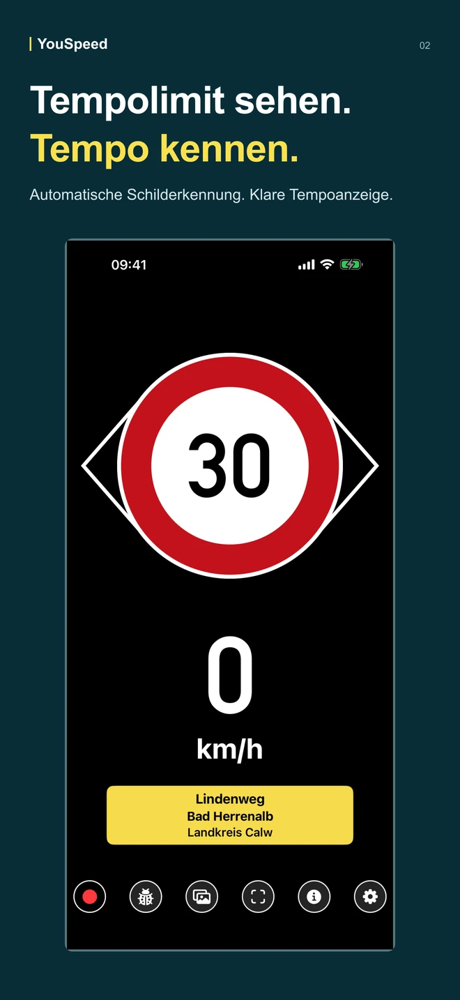
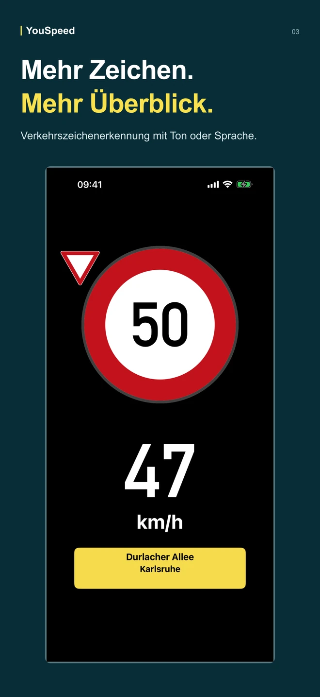
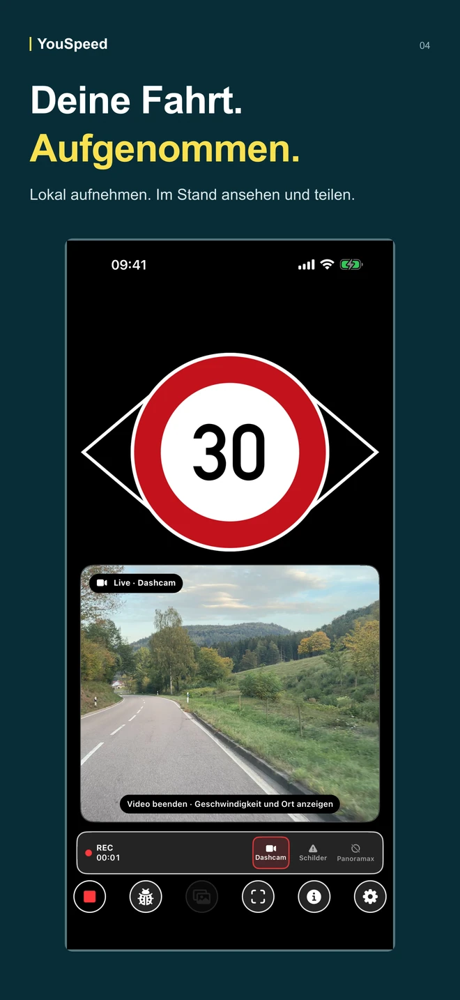
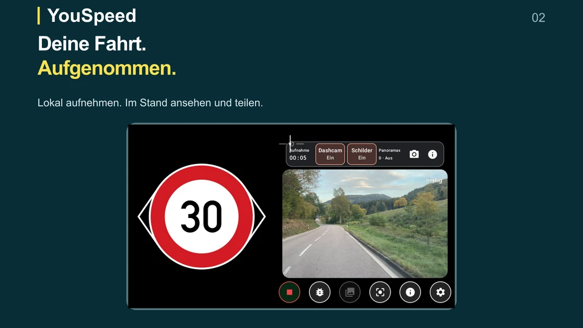
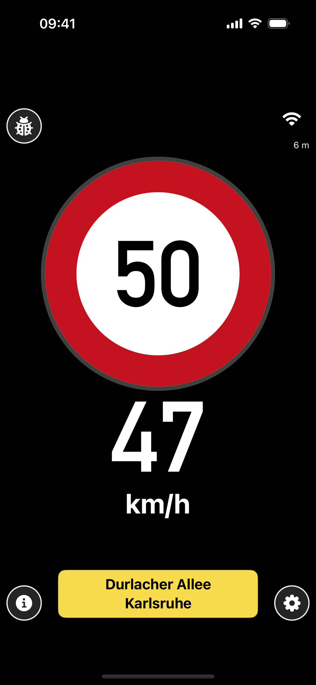
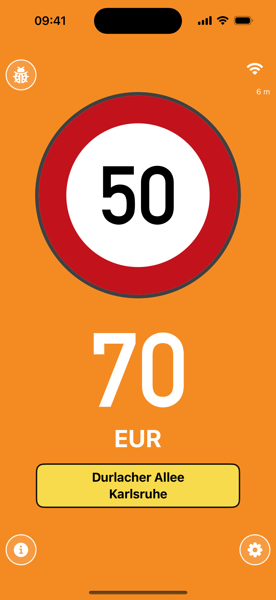
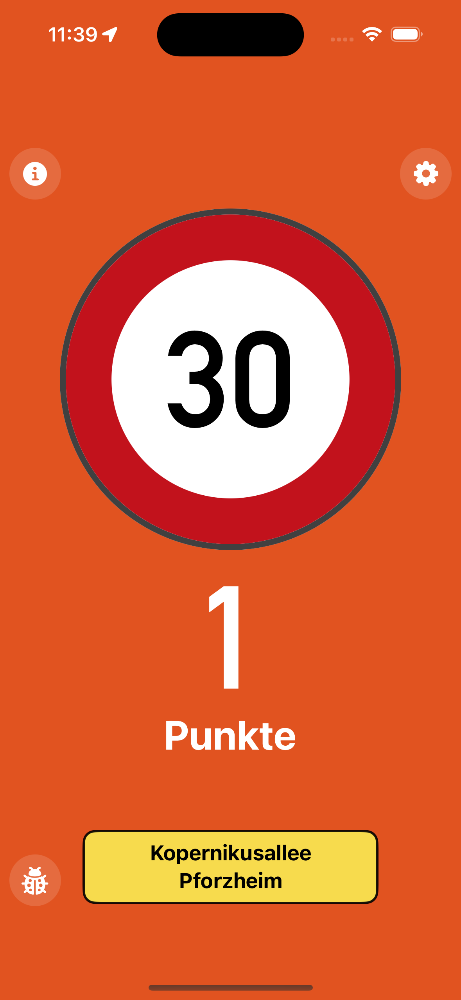
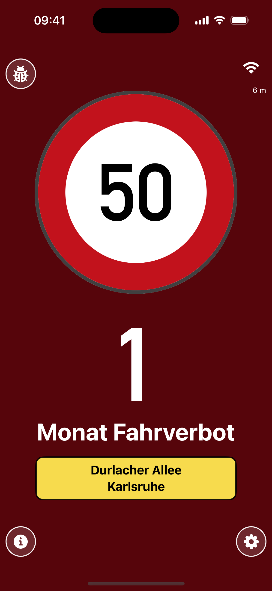
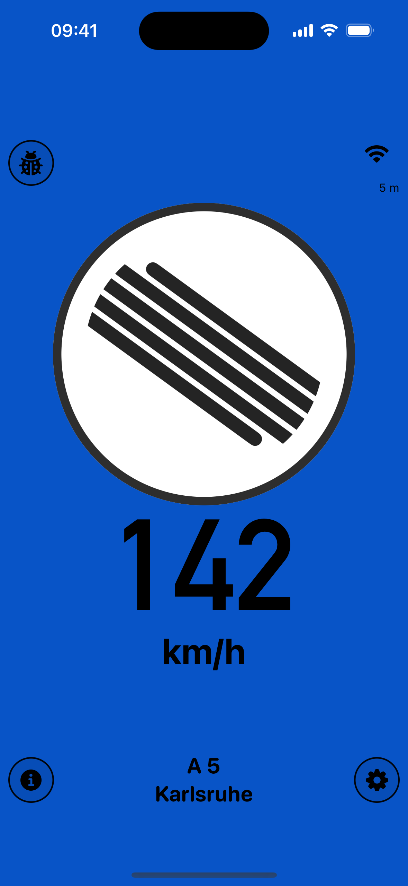

Verkehrszeichen automatisch erkennen
Die Smartphone-Kamera erkennt Tempolimits und weitere Schilder auf dem Gerät. Wähle Tonhinweise oder Sprachausgabe. Verfügbare Zeichen hängen von Land und installiertem Modell ab.
Version 1.3 · iPhone & Android
Fahr sicher. In jedem Auto.
Dein Smartphone wird zum Begleiter unterwegs: automatische Verkehrszeichenerkennung, Tempohinweise, Bußgeldschätzung und Dashcam. Unabhängig vom Baujahr deines Autos.
Android 14 oder neuer · arm64-v8a (die meisten aktuellen Smartphones) · 348 MB


Nachschlagen
Funktionen der App
Zur Tempoanzeige und den Warnstufen kommen Schilderkennung, lokale Aufnahmen und Nachschlagewerke für unterwegs.
Die Smartphone-Kamera erkennt Tempolimits und weitere Schilder auf dem Gerät. Wähle Tonhinweise oder Sprachausgabe. Verfügbare Zeichen hängen von Land und installiertem Modell ab.
Speichere Videos lokal und sieh sie im Stand an. Du kannst Aufnahmen teilen oder löschen und entscheidest, was du behältst.
Prüfe Fotos mit Standortdaten in der Galerie. Ein optionaler Panoramax-Upload startet erst nach deiner Auswahl und benötigt ein verbundenes Konto und Internet.
Unter Info findest du länderspezifische Bußgeldtabellen und einen Verkehrszeichenkatalog mit Piktogrammen und gesprochenen Namen. Offline verfügbar, ohne Rechtsberatung.
Suche Länder und Regionen, sieh Paketdatum und Downloadgröße und lade Karten unabhängig voneinander herunter oder lösche sie. Unterstützt werden unter anderem Deutschland, Frankreich, die Schweiz, Belgien und die Niederlande.
1.3 verbessert den Kartenwechsel an Landesgrenzen, die GPS-Verarbeitung und die kontinuierliche Zuordnung zur Straße. Die App ist auf Deutsch, Englisch, Französisch und Niederländisch verfügbar.



iPhone-Demonstrationsansichten aus dem 1.3-Release-Artwork. Die Dashcam-Illustration kombiniert die App-Oberfläche mit einem echten Aufnahmebild.
Download
Die signierte Android-Version ist als APK auf GitHub verfügbar. Lade vor der Fahrt deine Karten herunter und richte die App im Stand ein.
Android 14 oder neuer · arm64-v8a (die meisten aktuellen Smartphones) · 348 MB
Version 1.3 ist direkt für Android verfügbar. Die Veröffentlichung von 1.3 in Google Play und im App Store steht noch aus; die Store-Links führen zur dort verfügbaren Version.

Live-Anzeige
YouSpeed reduziert die Fahrtansicht auf Tempo, Limit und Konsequenz. Die Farben folgen dem App-Verhalten: neutral, Geldbuße, Punkte, Fahrverbot und Autobahn frei.





YouTube · 1.3
Der Film zeigt Schilderkennung, Dashcam und Straßenfotos sowie die Einrichtung vor der Fahrt. Englisch mit Untertiteln.
Vertrauen
YouSpeed ist ein Assistenzsystem. Verkehrszeichen, Verkehrsregeln und amtliche Bescheide bleiben maßgeblich.
Geschwindigkeitsdaten basieren auf OSM-Tags wie maxspeed, maxspeed:type und source:maxspeed.
Die Daten stehen unter der Open Database License. Attribution geht an OpenStreetMap-Mitwirkende.
Die App-Positionierung bleibt klar: keine Werbung und kein Tracking.
Moonshots Studios betreibt und vertreibt YouSpeed. Für Datenschutz-, Store- und Vertriebsfragen führt der direkte Kontakt zum Betreiber.